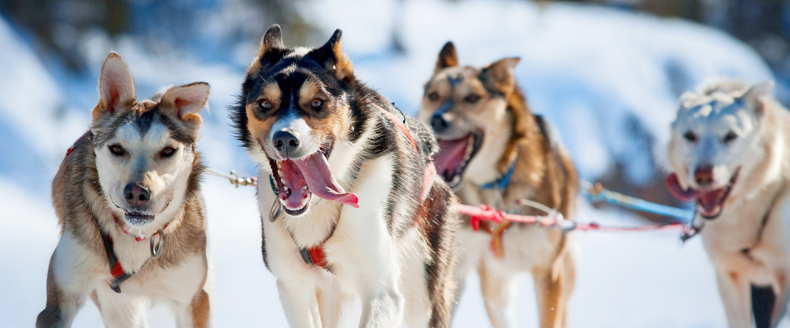
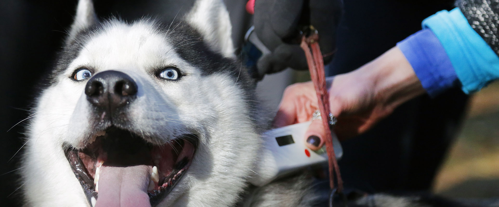

El Husky es un perro de tamaño mediano, que pesa entre 20 y 35 kilos y mide 50-60 centímetros a la cruz. Su esperanza de vida es de 12 a 15 años.

ADIESTRAMIENTO
Una guía sobre cómo adiestrar un husky siberiano, pues la naturaleza de estos caninos a veces hace esta tarea un poco más complicada que con otras razas.

MICROCHIP
Un microchip para mascotas es un pequeño dispositivo, del tamaño de un grano de arroz, que contiene un número de identificación único.
25 de Octubre de 2021
Información
Historia
El Husky es un magnífico perro de trineo, que llama la atención por su salvaje belleza. Las pruebas de ADN establecen que se trata de una de las razas de perros más antiguas del mundo.
Su origen se sitúa en Siberia. Allí, en la zona más cercana a Alaska, la tribu nómada de los Chukchi desarrolló la raza con el fin de transportar cargas ligeras en los trineos. Los Chukchi sólo hacían criar a los machos alfa, para mantener una línea pura apta para el trabajo. Las mujeres y los niños se encargaban de su cuidado, por lo que se trata de una raza acostumbrada a relacionarse con las personas.
Personalidad
El Husky no es un perro para cualquiera. Mucha gente lo busca atraída por su belleza, pero es importante conocer también su personalidad para saber si seremos capaces de convivir con este perro excepcional. La falta de información lleva muchas veces a sorpresas que terminan con el perro en una perrera, y esto no debería ser así.
El Husky es un perro de gran temperamento que necesita ser bien adiestrado y socializado para tener un carácter equilibrado.
El Husky es un perro muy inteligente e independiente. Es cariñoso, pero no se trata de un perro que busque atención continua. No es agresivo y suele llevarse bien con otros perros y con los niños.
Cuidados
Alimentación. Es importante que la dieta diaria de tu Husky sea de alta calidad. Se trata de un perro que no consumirá grandes raciones, ya que la raza ha sido desarrollada para poder llevar cargas ligeras a grandes distancias, a un ritmo rápido, baja temperatura y con la menor ingesta de comida posible.
El Husky es un perro muy limpio. Se toma su tiempo para asearse, de manera similar a los gatos. No huele mal y rara vez necesita un baño, a no ser que se revuelque en algo maloliente o se dedique a saltar en el barro. Utiliza un champú específico para perros cuando lo bañes.